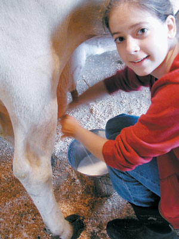
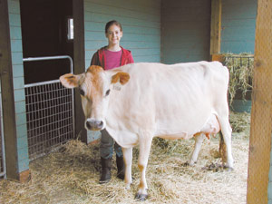
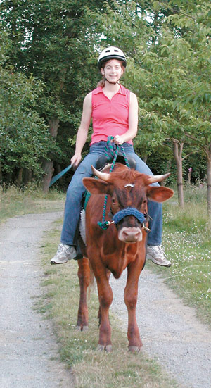
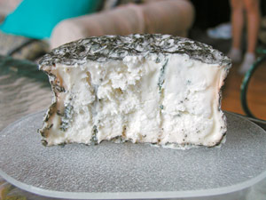
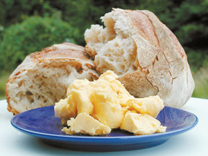
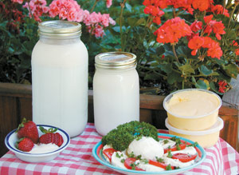

A determined teenager started her own dairy, producing milk, butter and fine cheeses from brie to blue.
Kelsey Kozak of Vashon Island, Wash., was 8 years old when she got a subscription to Fine Cooking magazine and started talking about buying a cow so she could make her own cheese. Brie was what she had in mind - a traditional soft French cheese with a distinctive white rind.
Now 16 years old, Kelsey has her cow - Iris, a 6-year-old Jersey with a silky tan coat and soulful brown eyes. She also has established Fort Bantam Creamery, a one-cow dairy based on a self-designed and profitable cow-share program. With Iris’ milk, Kelsey makes deep-golden (no color added!) butter, creamy yogurt, luscious ice cream and an array of flavorful cheeses, including her personal favorite (brie), as well as farmer’s cheese and mozzarella.
To find Iris, Kelsey says, she researched raising cows, particularly dairy breeds, and visited dairy farms in her area. She settled on a Jersey because it’s one of the oldest dairy breeds and is well-known for high-quality milk and butterfat production.
The visits to dairy farms proved useful in another, unexpected way. Some of the dairies were confinement operations, Kelsey says, where the cows were milked without any human touch and fed a grain-based diet that can cause health problems for the animals.
“Unfortunately,” Kelsey says, “the reality of the average dairy cow’s life is a far cry from the image of a contented cow amid a sea of green that adorns most advertising labels.”
Kelsey had her own ideas for Iris’ care. She says she wanted her cow to be grass-fed because milk from grass-fed cows is higher in beta carotene and vitamin E than milk from grain-fed cows. In part, that’s because fresh pasture has more of these nutrients than grain or hay. Another factor behind the high nutrient content is that a grazing cow produces less milk than a grain-fed cow, and because any given cow has only a set amount of vitamins to transfer to her milk; the less milk she produces, the more vitamins are in each glass.
Today, Iris, along with her current calf, Mo, are pastured on Vashon, a 12-mile-long island in Puget Sound, just west of Seattle, where the animals eat a cow’s natural grass diet supplemented in the off season by high-quality mixed-grass hay.
On that diet, Iris produces about 6 gallons of milk a day. Kelsey and her family - mom and dad, Linda and Chuck, and 18-year-old sister, Kristen - use what they need, and the rest goes into Kelsey’s creamery cow-share program. Here’s how it works:
Because Washington, like most states, has strict regulations governing the sale of raw milk, Kelsey’s Fort Bantam Creamery customers purchase a share of Iris for $15, and then pay a fee to Kelsey ($3.50 per half gallon of milk) to board, care for and milk that share of the cow.
At $3.50 per half gallon, Iris’ milk is about double the cost of milk from grocery stores in the area, but no one is complaining. Kelsey says customers are happy to pay the price, and are willing to travel as part of the bargain. One of Iris’ shareholders drives more than 100 miles round trip to get the milk, on top of paying a $15 ferry toll - the only way to get on and off the island.
In addition to being the centerpiece of Kelsey’s creamery operation, Iris also is the focus of Kelsey’s independent study class through which the teenager earns academic credit. Called “Dairying and Cheese Making,” Kelsey’s school project has helped her develop her culinary, business and animal husbandry skills, as well as improved her time management and expanded her library of dairying books.
“One thing that people should know before they get a dairy cow,” Kelsey says, “is that they take a lot of your time.” Kelsey milks Iris by hand twice a day, 305 days a year. (Iris is not milked for 60 days of the year in preparation for giving birth to a calf.)
When Kelsey started, she says, it took her about 45 minutes to milk the cow; today, she gets the job done in less than half that time. She also has slotted the independent study project as her first class of the school day, allowing her to sleep a little later each morning and still milk Iris before going to school.
Having a cow to milk every day also means little time off. “If you do go on vacation,” Kelsey says, “you have to get someone to do the milking for you, which is not as easy as getting a neighbor to watch your dog or cat.” When she goes away, Kelsey is fortunate to have a cheese-making friend, Charlene Osman, who gladly milks Iris in exchange for the milk.
Next year, if Iris’ calf is a female, Kelsey’s Fort Bantam Creamery will double in size. In anticipation of such an event, she has been experimenting with some new product recipes. So far, decaffeinated coffee ice cream, ricotta and other soft cheeses, and a variety of traditional hard cheeses such as cheddar look promising, Kelsey says. And sometime in the future, despite her already fast-accumulating experience, Kelsey plans to formally study the art of cheese making in the heart of her beloved Brie region in France.
|
 Kelsey Kozak Kelsey milks Iris. |
 Linda Kozak Prior to milking, Kelsey Kozak gets ready to give Iris a much-enjoyed brushing. |
 Linda Kozak Mo, now 18 months old and more than 1,000 pounds, is trained to ride and pull. A Jersey-milking shorthorn-cross steer, he is Iris' third calf. |
|
 Kelsey Kozak This blue cheese is Fort Bantam Creamery's original cheese product. |
 Kelsey Kozak Kelsey's butter with locally made artisan bread. |
 Kelsey Kozak Clockwise from top left, raw whole milk, yogurt, butter, fresh mozzarella with tomatoes and herbs, and strawberries with creme fraiche. |